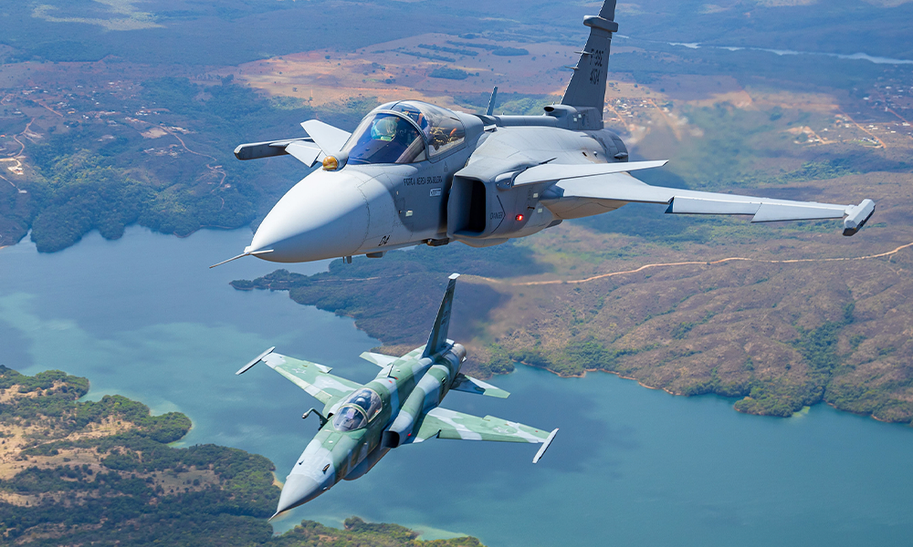
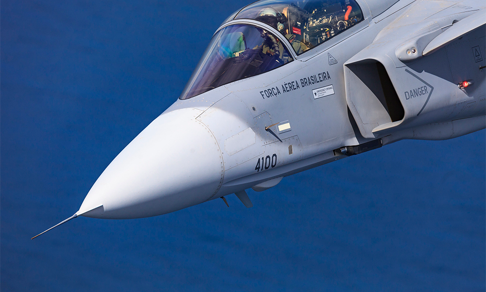

F-39E
Saab JAS 39 Gripen, também designado como F-39 Gripen, é um caça multiuso leve monomotor de quarta geração e meia fabricado pela empresa aeroespacial Saab, da Suécia. Foi projetado para substituir o Saab 35 Draken e o 37 Viggen na Força Aérea Sueca (Flygvapnet). O Gripen tem uma configuração de asas em delta e canard, além de controles de voo fly-by-wire. Ele é alimentado por um Volvo RM12 e tem uma velocidade máxima de Mach 2. Tais aeronaves mais tarde foram modificadas para os padrões de interoperabilidade da OTAN e para o reabastecimento aéreo. "JAS" é a abreviatura de "Jakt, Attack, Spaning" (em português Caça, Ataque, Reconhecimento), e "Gripen" (do grego: Γρύπας, Gryphus e em português, Grifo) é o nome da criatura mitológica da antiguidade, meio leão, meio águia, cuja imagem também está presente no logotipo da própria marca Saab. Em 1979, o governo sueco iniciou estudos de desenvolvimento para uma aeronave capaz de missões de caça, ataque e reconhecimento para substituir o Saab 35 Draken e o 37 Viggen. Um novo projeto da Saab foi selecionado e desenvolvido como o JAS 39, voando pela primeira vez em 1988. Após dois acidentes durante o desenvolvimento do voo e subsequentes alterações no software de controle de voo da aeronave, o Gripen entrou em serviço com a Força Aérea Sueca em 1997. Variantes atualizadas, com aviônicos mais avançados e adaptações para tempos de missão mais longos, começaram a entrar em serviço em 2003.

